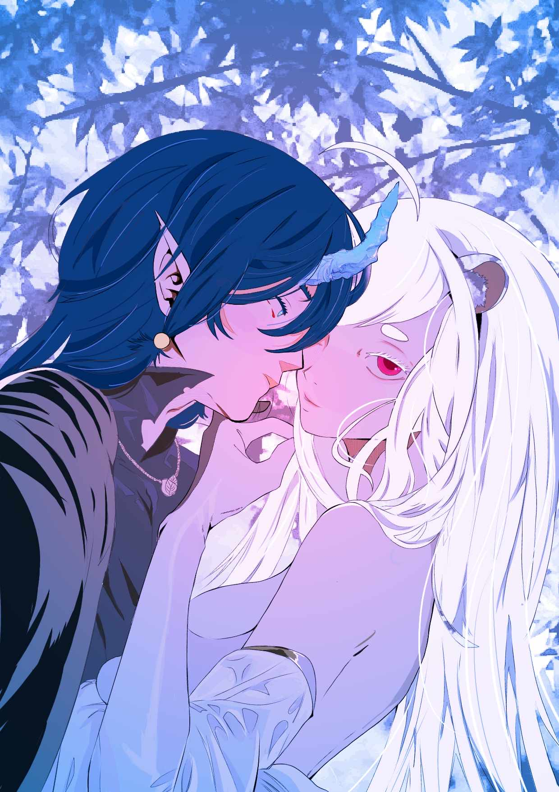
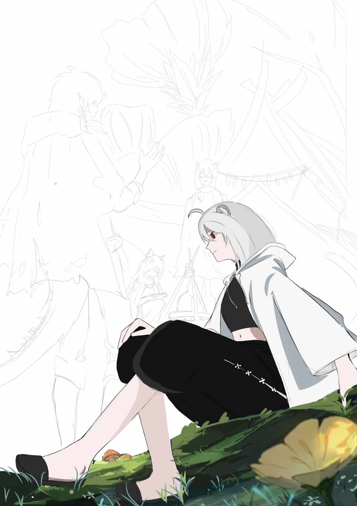
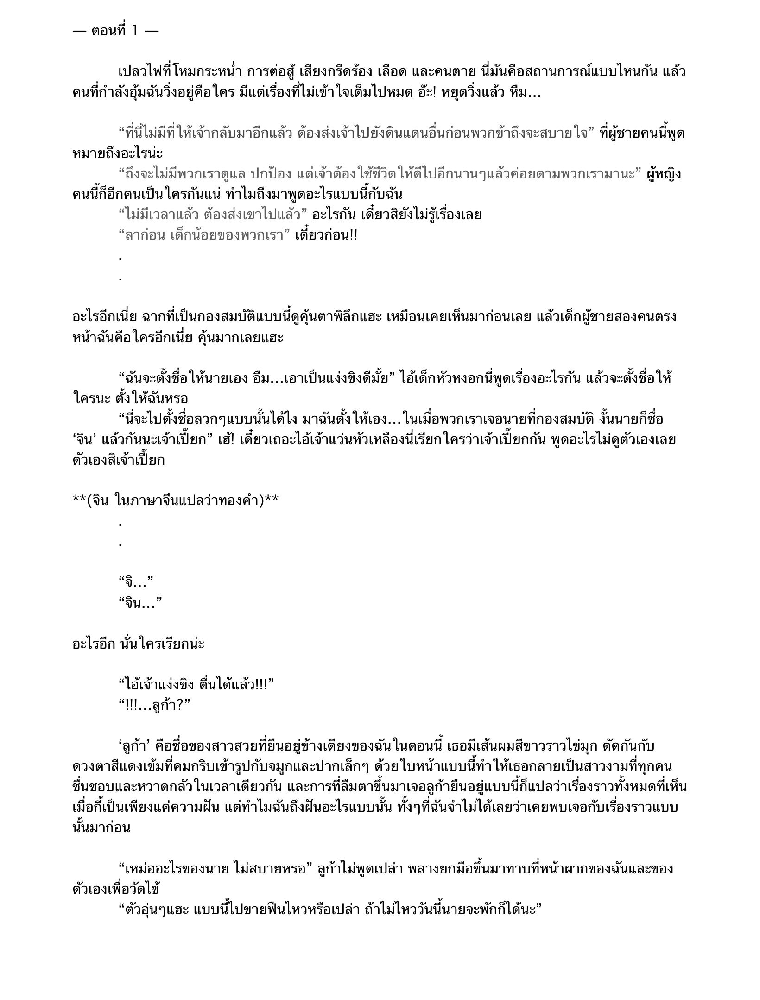

Step for Fiction
Step
ขั้นตอนที่ 1
การกำหนดหมวดหมู่
การกำหนดหมวดหมู่ คือ การเลือกแนวเรื่องมาหนึ่งแนวจากทั้งหมด ซึ่งหมวดหมู่จะมีทั้งหมดดังนี้ Love Novel,
Boy Love, Girl Love, แฟนตาซี/sci-fi/ไลท์โนเวล, สืบสวน/ลึกลับ/สยองขวัญ,
สะท้อนสังคม/แนวทางเลือก/เยาวชน, และบทความ
ขั้นตอนที่ 2 ออกแบบตัวละครภายในเรื่อง
การออกแบบตัวละครภายในเรื่อง คือ
การกำหนดคาแรคเตอร์ให้กับตัวละครที่จะมาทำการดำเนินเรื่อง
เพื่อให้ผู้อ่านจินตนาการภาพตามได้ง่ายยิ่งขึ้น โดยในขั้นตอนการออกแบบตัวละครจะมีขั้นตอนย่อยอีก
ดังนี้
1.ตั้งชื่อตัวละคร
2.ออกแบบลักษณะนิสัยของตัวละคร
3.ออกแบบลักษณะหน้าตาของตัวละคร
4.กำหนดปมตัวละคร
ขั้นตอนที่ 3
วางพล็อตเรื่องและตั้งชื่อเรื่อง
การวางพล็อตเรื่อง คือ การวางเส้นทางการดำเนินไปของเนื้อเรื่อง
ว่าจะมีลำดับขั้นของเนื้อเรื่องเป็นอย่างไรบ้าง
วางเส้นเรื่องตั้งแต่ฉากแรกไปจนถึงฉากสุดท้ายว่าอะไรเกิดขึ้นบ้าง
การตั้งชื่อเรื่อง คือ การตั้งชื่อที่สอดคล้องกับเรื่องและสามารถดึงดูดใจให้คนอยากเข้ามาอ่านได้
ขั้นตอนที่ 4 เริ่มแต่งนิยายตามพล็อตเรื่อง
การแต่งนิยายตามพล็อตเรื่อง ไม่มีอะไรมาก มีเพียงการทำตามแผนที่วางไว้ให้ได้ จุดที่ยากคือ
การบรรยายเพื่อให้ผู้อ่านสามารถเข้าใจสถานการณ์และคิดภาพตามไปได้อย่างลื่นไหล
ขั้นตอนที่ 5 ออกแบบหน้าปกนิยาย
การออกแบบหน้าปกนิยาย คือ งานส่วนที่ต้องทำร่วมกับนักวาด
เพื่อให้ได้รูปภาพหน้าปกตรงตามที่เราคิด แต่หากวาดเองได้ก็ถือว่าตัดปัญหาเรื่องนักวาดออกไปได้
การออกแบบภาพหน้าปกให้นักวาดต้องวาดรายละเอียดและเขียนกำกับไปให้นักวาดให้ครบเพื่อการทำงานที่รวดเร็วยิ่งขึ้น